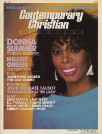

CMnexus
: Contemporary Christian culture, music, and media.
|
Donna SummerOn the cover
July 1983
Contemporary Christian Magazine | Media coverageAlbums & reviews:1983: She Works Hard For The Money 1987: All Systems Go
1989: Another Time, Another Place
Award Summary (Nominations / Wins)
Dove Awards Grammy Awards1983 Grammy Awards- Best Inspirational Performance: "He's A Rebel"
1984 Grammy Awards- Best Inspirational Performance: "Forgive Me"
Books about Donna Summer
- "Donna Summer" in The Encyclopedia of Contemporary Christian Music (Mark Allan Powell, 2002).
|
|